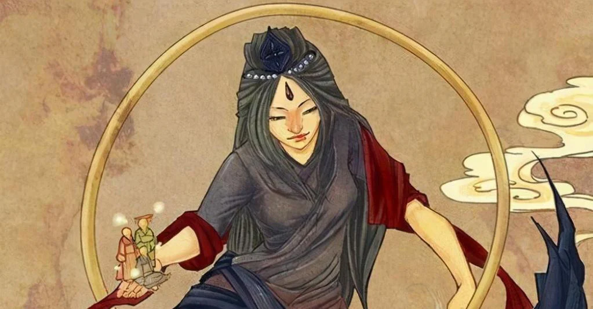
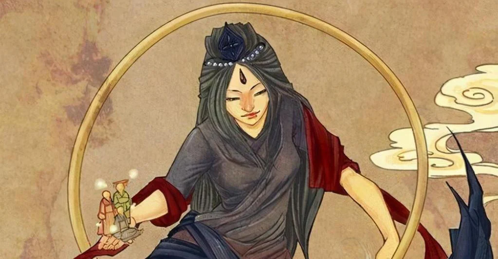

La Creación de la Humanidad: El Mito de Nuwa y su Toque Divino
En los mitos chinos, la creación de la humanidad es atribuida a la diosa Nuwa, cuya sabiduría y poderes creativos dieron origen a los primeros seres humanos.
¿Que trata?
Hace mucho tiempo, cuando la tierra estaba en sus primeras etapas y aún no existían los humanos, la diosa Nuwa, conocida por su sabiduría y compasión, caminaba por el mundo admirando su belleza. A pesar de la magnificencia de la creación, Nuwa sentía que algo faltaba. El mundo, aunque hermoso, estaba vacío y silencioso. No había criaturas que pudieran apreciar verdaderamente la maravilla de la creación ni seres que pudieran comunicarse y compartir sus sentimientos y pensamientos. Un día, mientras paseaba junto a un río, Nuwa se detuvo a contemplar su reflejo en el agua. La visión del barro a la orilla del río le inspiró una idea brillante. Se arrodilló y con sus manos moldeó una pequeña figura de barro, dándole una forma similar a la suya propia, pero en miniatura. A esta figura le dio una cabeza, dos brazos y dos piernas. Nuwa miró con satisfacción su creación y, con un soplo de vida, la figura de barro cobró vida, convirtiéndose en el primer ser humano.
Este primer humano se movía, reía y hablaba, y Nuwa se sintió llena de alegría al ver que su creación había resultado un éxito. Sin embargo, Nuwa se dio cuenta de que un solo ser humano no era suficiente para poblar la vasta tierra. Así que continuó moldeando más figuras de barro, una tras otra, insuflándoles vida con cada soplo. Pronto, la tierra estuvo habitada por hombres y mujeres, cada no con una apariencia y personalidad únicas. Con el tiempo, Nuwa sintió que hacer humanos a mano uno por uno era un proceso lento y cansado. Entonces, tuvo otra idea. Sumergió una cuerda en el barro y la sacudió, haciendo que gotas de barro volaran en todas direcciones. Cada gota que caía al suelo se transformaba mágicamente en un ser humano. Este método permitió a Nuwa crear seres humanos en gran cantidad y rápidamente. De esta manera, Nuwa llenó el mundo de humanos que pudieron disfrutar de la belleza de la creación, comunicarse entre ellos, formar comunidades y reproducirse, asegurando que la tierra nunca más estaría vacía o silenciosa. Gracias a Nuwa, la humanidad pobló la tierra, y los hombres y mujeres, creados con amor y dedicación, vivieron para honrar a su creadora. Nuwa, satisfecha con su obra, continuó vigilando y protegiendo a la humanidad, asegurándose de que sus creaciones prosperaran y vivieran en armonía.

Significado y Simbolismo
En los mitos chinos, la creación de la humanidad es atribuida a la diosa Nuwa, cuya sabiduría y poderes creativos dieron origen a los primeros seres humanos.
¿Que trata?
Hace mucho tiempo, cuando la tierra estaba en sus primeras etapas y aún no existían los humanos, la diosa Nuwa, conocida por su sabiduría y compasión, caminaba por el mundo admirando su belleza. A pesar de la magnificencia de la creación, Nuwa sentía que algo faltaba. El mundo, aunque hermoso, estaba vacío y silencioso. No había criaturas que pudieran apreciar verdaderamente la maravilla de la creación ni seres que pudieran comunicarse y compartir sus sentimientos y pensamientos. Un día, mientras paseaba junto a un río, Nuwa se detuvo a contemplar su reflejo en el agua. La visión del barro a la orilla del río le inspiró una idea brillante. Se arrodilló y con sus manos moldeó una pequeña figura de barro, dándole una forma similar a la suya propia, pero en miniatura. A esta figura le dio una cabeza, dos brazos y dos piernas. Nuwa miró con satisfacción su creación y, con un soplo de vida, la figura de barro cobró vida, convirtiéndose en el primer ser humano.
Este primer humano se movía, reía y hablaba, y Nuwa se sintió llena de alegría al ver que su creación había resultado un éxito. Sin embargo, Nuwa se dio cuenta de que un solo ser humano no era suficiente para poblar la vasta tierra. Así que continuó moldeando más figuras de barro, una tras otra, insuflándoles vida con cada soplo. Pronto, la tierra estuvo habitada por hombres y mujeres, cada no con una apariencia y personalidad únicas. Con el tiempo, Nuwa sintió que hacer humanos a mano uno por uno era un proceso lento y cansado. Entonces, tuvo otra idea. Sumergió una cuerda en el barro y la sacudió, haciendo que gotas de barro volaran en todas direcciones. Cada gota que caía al suelo se transformaba mágicamente en un ser humano. Este método permitió a Nuwa crear seres humanos en gran cantidad y rápidamente. De esta manera, Nuwa llenó el mundo de humanos que pudieron disfrutar de la belleza de la creación, comunicarse entre ellos, formar comunidades y reproducirse, asegurando que la tierra nunca más estaría vacía o silenciosa. Gracias a Nuwa, la humanidad pobló la tierra, y los hombres y mujeres, creados con amor y dedicación, vivieron para honrar a su creadora. Nuwa, satisfecha con su obra, continuó vigilando y protegiendo a la humanidad, asegurándose de que sus creaciones prosperaran y vivieran en armonía.

Significado y Simbolismo
- Creatividad y poder femenino: Nuwa es una diosa femenina que crea vida a partir del barro, lo que resalta el poder creativo asociado con lo femenino en la mitología china. Este aspecto del mito puede interpretarse como un reconocimiento de la importancia de la creatividad y la capacidad de generar vida que se atribuye a las mujeres.
- Variabilidad y diversidad humana: Nuwa crea a los humanos de diferentes formas y tamaños, lo que representa la diversidad de la humanidad. Esta diversidad es valorada y celebrada en el mito, lo que sugiere que cada individuo es único y valioso en su propia forma.
- Armonía y equilibrio en la creación: Nuwa crea a los humanos para llenar el mundo y asegurar que no esté vacío ni silencioso. Este acto simboliza el deseo humano de armonía y equilibrio en el mundo natural. Además, sugiere que la humanidad es una parte integral del universo y que tiene un papel que desempeñar en mantener el equilibrio cósmico.